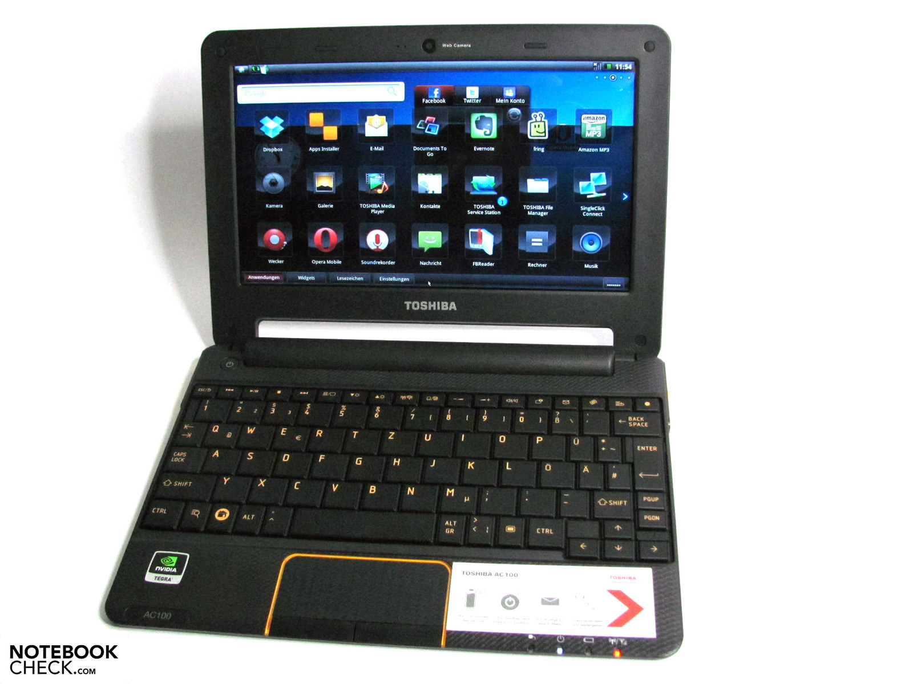
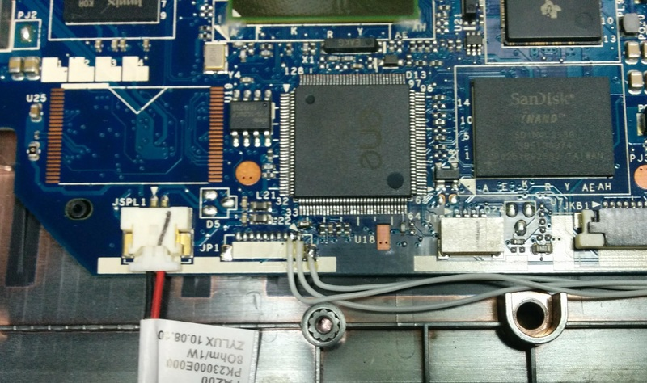

Toshiba AC100(paz00)
| This device is supported as part of a generic port. Refer to Nvidia Tegra armv7 (nvidia-tegra-armv7) for installation instructions and more information. |
|
 Toshiba AC100 stock | |
| Manufacturer | Toshiba |
|---|---|
| Name | AC100 |
| Codename | paz00 |
| Model | AC100-117 |
| Released | 2011 |
| Pre-released | 2009 |
| Type | laptop |
| Hardware | |
| Chipset | Nvidia Tegra 2 (T20) |
| CPU |
2x 1GHz ARM Cortex-A9 MPCore PL310 L2 Cache ARMv4T ARM7TDMI (AVP) |
| GPU | ULP GeForce (Ultra-Low Power) |
| Display | 1024 x 600 TN LCD Samsung LTN101NT05, 60Hz LVDS 262k 300:1 222.72 X 125.28(mm) |
| Storage | 8 GB / 32 GB (for AC116) |
| Memory | 512 MB DDR2 800MHz HY5PS1G831C |
| Architecture | armv7 |
| Write-Protect type | no SBK burned |
| Software | |
Original software
The software and version the device was shipped with.
|
Android 2.1 |
Extended version
The most recent supported version from the manufacturer.
|
Android 2.2 |
| FOSS bootloader | yes |
| postmarketOS | |
| Category | testing |
Pre-built images
Whether pre-built images are available from the postmarketOS Installation page.
|
Nvidia Tegra armv7 |
Mainline
Instead of a Linux kernel fork, it is possible to run (Close to) Mainline.
|
yes |
pmOS kernel
The kernel version that runs on the device's port.
|
6.16 |
Unixbench score
Unixbench Whetstone/Dhrystone score. See Unixbench.
|
418.7 |
| Generic port | Nvidia Tegra armv7 (nvidia-tegra-armv7) |
{kind=link}
Flashing
Whether it is possible to flash the device with
pmbootstrap flasher. |
Untested
|
|---|---|
USB Networking
After connecting the device with USB to your PC, you can connect to it via telnet (initramfs) or SSH (booted system).
|
Works
|
Internal storage
eMMC, SD cards, UFS...
|
Works
|
SD card
Also includes other external storage cards.
|
Works
|
Battery
Whether charging and battery level reporting work.
|
Works
|
Screen
Whether the display works; ideally with sleep mode and brightness control.
|
Works
|
Keyboard
Whether the built-in physical keyboard works.
|
Works
|
Touchpad
Whether the built-in touchpad works.
|
Works
|
| Multimedia | |
3D Acceleration |
Partial
|
Audio
Audio playback, microphone, headset and buttons.
|
Works
|
Camera |
Works
|
| Connectivity | |
WiFi |
Works
|
Bluetooth |
Untested
|
GPS |
Untested
|
| Modem | |
Calls |
Untested
|
SMS |
Untested
|
Mobile data |
Untested
|
| Miscellaneous | |
FDE
Full disk encryption and unlocking with unl0kr.
|
Untested
|
USB-A
Whether the full-sized USB-A port works.
|
Works
|
USB OTG
USB On-The-Go or USB-C Role switching.
|
Works
|
HDMI/DP
Video and audio output with HDMI or DisplayPort.
|
Works
|
Primary Bootloader
Whether it is possible to replace stock bootloader with U-Boot.
|
Works
|
|---|---|
Secondary Bootloader
Whether it is possible to chainload U-Boot from stock bootloader.
|
Works
|
Mainline
Whether latest upstream versions of U-Boot are not broken and it is possible to use them.
|
Works
|
Internal Storage
Whether it is possible to boot from internal storage (e.g. eMMC or UFS).
|
Works
|
SD card
Whether it is possible to boot from SD card.
|
Works
|
USB Host
Whether it is possible to boot from a USB storage or connect a keyboard.
|
Works
|
USB Peripheral
Whether it is possible to use device as a peripheral in U-Boot, e.g. for fastboot mode.
|
Works
|
Display |
Works
|
Keyboard |
Partial
|
Buttons
Whether it is possible to navigate in boot menu or grub with volume and power buttons.
|
Works
|
Device owners
- Microfool (Notes: Edge)
Variants
There are several models available, mostly depending on the country they are sold. All have WiFi support, but differ in the amount of internal storage and addition wireless connections. The table below lists some of them:
| Model | Part # | Storage | Bluetooth | 3G | Keyboard | Country | Notes |
|---|---|---|---|---|---|---|---|
| 10D | PDN01E-008013G3 | 16 GB | Yes | No | ? | Germany | ? |
| 10D | PDN01E-00801EN5 | 16 GB | Yes | No | qwerty nordic | Sweden, Norway | |
| 10D | PDN01E-00800SIT | 16 GB | Yes | No | qwerty | Italy | |
| 10D | PDN01E-008018PL | 16 GB | Yes | No | qwerty | Poland | |
| 10E | PDN01E-006018PL | 32 GB | Yes | Yes | qwerty | Poland | |
| 10G | PDN01E-00C00SIT | 16 GB | Yes | Yes | qwerty | Italy, Sweden | |
| 10K | PDN01E-001013G3 | 8 GB | No | No | qwertz | Germany | |
| 10N | PDN01E-00200QHU | 32 GB | No | No | qwertz | Hungary | |
| 10N | PDN01E-002015CZ | 32 GB | No | No | qwerty/czech | Czech Republic | |
| 10T | PDN01E-005001AR | 8 GB | Yes | Yes | ? | Netherlands, Middle East Africa | ? |
| 10T | PDN01E-00500CDU | 8 GB | Yes | Yes | qwerty | Netherlands | |
| 10U | PDN01E-00500EEN | 8 GB | Yes | Yes | qwerty | United Kingdom | |
| 10V | PDN01E-003016GR | 8 GB | No | Yes | qwertz | Germany | |
| 10W | PDN01E-004015CZ | 16 GB | No | Yes | qwerty/czech | Czech Republic | |
| 10Z | PDN01E-00700EEN | 8 GB | Yes | No | qwerty | United Kingdom | ? |
| 111 | PDN01E-00600WS4 | 32 GB | Yes | Yes | qwertz/swiss | Swiss | |
| 113 | PDN01E-00400QHU | 16 GB | No | Yes | qwertz | Hungary | ? should be |
| 114 | PDN01E-00900GFR | 16 GB | No | No | azerty | France | |
| 116 | PDN01E-00L00URU | 32 GB | Yes | Yes | qwerty/йцукен | Russia | |
| 117 | PDN01E-00K00URU | 8 GB | Yes | No | qwerty/йцукен | Russia | |
| 118 | PDN01E-00M00URU | 8 GB | Yes | Yes | qwerty/йцукен | Russia | |
| ? | PDN01A-00D01F | 32 GB | Yes | No | qwerty | Australia | ? |
| AZ/05M | PDN01N-00H01C | 16 GB | Yes | No | qwerty/japanese | Japan | |
| ? | PDN01K-00801K | 16 GB | Yes | No | qwerty/korean | Korea |
? marks refers to entries which have not been confirmed. If you are owner of such a model, please edit the page, fix the potential errors, and remove the question mark.
The “Toshiba AC100” is known as “Toshiba dynabook AZ” in Japan.
Kernel status
Kernel is in Mainline for a long time. Built for Hard Float (armhf, or armv7l).
Kernels for 3.x, 5.x , 6.x are avaliable.
Stock kernel is 2.6.21 armel was shipped for Android 2.1 and 2.6.28 for Android 2.2.
PostmarketOS is using patched with grate and tegra modifications. It seems there are minimum differences with Mainline.
U-Boot support
U-Boot built from mainline (master branch) lack of keyboard support. Other features most fully supported, except otg usb ethernet.
NVEC embedded controller
There is patched version witch NVEC keyboard enablement which was ported from Linux Kernel by Muromec, Zombah, and others. NVEC I2C, NVEC keyboard as u-boot driver model. Then me ported this patch to U-Boot 2026.04.
Installation
Download any prebuild image and uncompress it. Plug in mini-USB cable.
direct flash into EMMC or SD card in UMS mode
- Once booted into U-Boot insert SD card, then enter
ums 0 mmc 0to expose to PC inner EMMC as USB mass storage orums 0 mmc 1to expose SD card. - Then use any image writing tool on PC to raw write.
DFU mode upload
dfu 0 mmc 0- use dfu-util on PC to manage upload raw data.
NVFASH upload and repartition inner EMMC
When moving from stock Android we must erase all partition information of Tegraparts to make full range of emmc availble at once. Then we bay repart it as we want. TBD.
Boot from U-Boot
- Boot into U-Boot
- Use
sysbootcommand to load and run /extlinux/extlinux.conf - May save this command to
bootcmdto auto boot next time.
u-boot# setenv pm sysboot mmc 1 any 0x3000 /extlinux/extlinux.conf
u-boot# setenv bootcmd run pm
u-boot# saveenv
u-boot# sysboot mmc 1 any 0x3000 /extlinux/extlinux.conf
Access from OS to U-Boot variables
- Install package u-boot-tools
apk add u-boot-tools - Edit
/etc/fw_env.config:
/dev/mmcblk0boot1 0xfe000 0x2000
This is 8Kb offset from end of partition.
- Run
fw_printenvorfw_setenv
nvidia-tegra-armv7:~$ sudo fw_printenv
[sudo: authenticate] Password:
arch=arm
baudrate=115200
board=paz00
board_name=paz00
boot_targets=usb mmc1 mmc0 pxe dhcp
bootcmd=bootflow scan
bootdelay=2
cpu=armv7
fdt_addr_r=0x03000000
fdtcontroladdr=1eb24d00
fdtfile=tegra20-paz00.dtb
initrd_high=ffffffff
kernel_addr_r=0x1000000
loadaddr=0x1000000
platform=tegra20
pm=sysboot mmc 1 any 0x3000 /extlinux/extlinux.conf
pxefile_addr_r=0x10100000
ramdisk_addr_r=0x03100000
scriptaddr=0x10000000
serial#=17006189437fd157
soc=tegra20
stderr=serial,vidconsole
stdin=serial,tegra-nvec-kbc,usbkbd
stdout=serial,vidconsole
usb_ignorelist=0x1050:*,
vendor=compal
ver=U-Boot 2026.01-gfa1e9df266c2 (Jan 17 2026 - 15:11:24 +0800)
nvidia-tegra-armv7:~$
How to enter APX mode
| Note: APX mode is a special low-level diagnostic and device-programming mode for NVIDIA Tegra–based devices. The firmware implementing APX mode is stored in the boot ROM and hence can never be changed. |
- Plug mini-USB cable on right side slot and connect to PC.
- Find and install "NVIDIA USB Boot-recovery driver for Mobile devices" for APX mode device (USB\VID_0955&PID_7820) signed driver
- Press and wait few seconds until power led is on.
- example from linux
[Thu Oct 11 06:31:57 2018] usb 2-2.4: new high-speed USB device number 13 using xhci_hcd
[Thu Oct 11 06:31:57 2018] usb 2-2.4: New USB device found, idVendor=0955, idProduct=7820, bcdDevice= 1.02
[Thu Oct 11 06:31:57 2018] usb 2-2.4: New USB device strings: Mfr=1, Product=2, SerialNumber=0
[Thu Oct 11 06:31:57 2018] usb 2-2.4: Product: APX
[Thu Oct 11 06:31:57 2018] usb 2-2.4: Manufacturer: NVIDIA Corp.
- run
nvflash,tegrarcmorputusbtools
Serial Console
{kind=link}

- in - RX UART1
- out - TX UART1
- out - T20_WAKE#
- out - +3V
- out - +1.8V
- in - SYSTEM_RESET#
- in - EC_TX80_PDATA
- in - GND
T20_WAKE# is possible output from EC controller to GPIO Tegra SOC, notifies data on I2c is ready. EC_TX80_PDATA used for inner debugging of EC and read POST data on power on. Some debug messages may be read. TBD.
Compal LA-6352P PAZ00 AC100 board schematics
Accelerated video decoding
As said, mpv runs on grate driver flawlessly up to 480p (SD) with single framedrops. HD videos larger then 1080 runs with 10-15 fps. For optimal playback with mercy framedrop apply these settings into file .config/mpv/mpv.conf
vo-vaapi-scaling=fast
fullscreen=yes
vo=xv
cache-secs=2
framedrop=decoder+vo
profile=fast
hwdec=vdpau
user-agent="Gecko/"
Wi-Fi controller firmware missing
It seems rt2870.bin not included, to able tun wireless controller manually put to /lib/firmware/rt2870.bin
[ 20.612984] ieee80211 phy0: rt2x00_set_rt: Info - RT chipset 3070, rev 0201 detected
[ 20.655335] ieee80211 phy0: rt2x00_set_rf: Info - RF chipset 0005 detected
[ 20.659674] usbcore: registered new interface driver rt2800usb
[ 36.055336] ieee80211 phy0: rt2x00lib_request_firmware: Info - Loading firmware file 'rt2870.bin'
[ 36.061203] ieee80211 phy0: rt2x00lib_request_firmware: Info - Firmware detected - version: 0.36
Also you may install it later with firmware-nvidia-tegra-armv7 package.
Wi-Fi led as MMC disk activity led
- Create file
/etc/local.d/01-rc.local.start - Make it executable
chmod +x /etc/local.d/01-rc.local.start - Put this content (mmc1 for external SD , mmc0 for internal EMMC)
#/bin/sh
echo mmc1 | tee /sys/devices/soc0/gpio-leds/leds/wifi-led/trigger
In general this file acts like rc.local.
Overclocking
Able to overclock up to 1.20 GHz by modding dtb. Changes max voltage to 1.2V.
dtc -I dtb /boot/dtbs/tegra20-paz00.dtb > overclock.dts- Find sm1 node and modify value
sm1 {
regulator-name = "+1.0vs_sm1,vdd_cpu";
regulator-min-microvolt = <0xb71b0>;
- regulator-max-microvolt = <0x10c8e0>;
+ regulator-max-microvolt = <0x124f80>;
regulator-coupled-with = <0x30 0x2e>;
regulator-coupled-max-spread = <0x86470 0x86470>;
regulator-always-on;
- Rebuild dtb
dtc -I dts -O dtb -o tegra20-paz00.dtb overclock.dts - Put to boot
sudo cp tegra20-paz00.dtb /boot/dtbs/tegra20-paz00.dtb - Important: do cold boot, power off needed.
nvidia-tegra-armv7:~$ cpufreq-info
cpufrequtils 008: cpufreq-info (C) Dominik Brodowski 2004-2009
Report errors and bugs to cpufreq@vger.kernel.org, please.
analyzing CPU 0:
driver: cpufreq-dt
CPUs which run at the same hardware frequency: 0 1
CPUs which need to have their frequency coordinated by software: 0 1
maximum transition latency: 400 us.
hardware limits: 216 MHz - 1.20 GHz
available frequency steps: 216 MHz, 312 MHz, 456 MHz, 608 MHz, 760 MHz, 816 MHz, 912 MHz, 1000 MHz, 1.10 GHz, 1.20 GHz
available cpufreq governors: ondemand, userspace, performance, schedutil
current policy: frequency should be within 216 MHz and 1.20 GHz.
The governor "ondemand" may decide which speed to use
within this range.
current CPU frequency is 1.20 GHz.
analyzing CPU 1:
driver: cpufreq-dt
CPUs which run at the same hardware frequency: 0 1
CPUs which need to have their frequency coordinated by software: 0 1
maximum transition latency: 400 us.
hardware limits: 216 MHz - 1.20 GHz
available frequency steps: 216 MHz, 312 MHz, 456 MHz, 608 MHz, 760 MHz, 816 MHz, 912 MHz, 1000 MHz, 1.10 GHz, 1.20 GHz
available cpufreq governors: ondemand, userspace, performance, schedutil
current policy: frequency should be within 216 MHz and 1.20 GHz.
The governor "ondemand" may decide which speed to use
within this range.
current CPU frequency is 1.20 GHz.
EC KB926D (Toshiba AC100 / Paz00)
Datasheet
Tegra2 Embedded Controller Interface Specification
General Architecture
The KB926D EC functions as the central I/O controller of the laptop. It collects data from all peripherals and forwards it to the Tegra 2 via I2C.
┌─────────────────────────────────────────────────────────────────┐
│ KB926D EC │
├─────────────────────────────────────────────────────────────────┤
│ POST → Init → Main Loop → {Keyboard, PS/2, Battery, LID, I2C} │
└─────────────────────────────────────────────────────────────────┘
│
▼ I2C (EC_TX80_PDATA ─ UART Debug)
┌─────────┐
│ Tegra 2 │
└─────────┘
Functional Blocks
1. POST and Initialization (_POST_Init @ 0x11f6)
| What it does | How it works |
|---|---|
| Boot mode check | Reads pin 0xFF01 (normal 0x00 / bootloader 0xF0) |
| Memory clear | Clears internal RAM (0x00-0x7F) and external RAM (0xF400-0xF800) |
| GPIO configuration | Configures ports via 0xFCxx registers |
| UART initialization | Configures serial port for debugging |
| POST code output | FLASH C NV → FLASH B (Bootloader) |
POST codes on UART (EC_TX80_PDATA):
FLASH - Flash memory initialization B / C - Mode: Bootloader / Customer (Normal) NV - Non-Volatile memory check ER<dump> - Dump of 0xF54B area (24+16+8 bytes) RPO - PS/2 report
2. UART Debugging (EC_TX80_PDATA)
| Function | Purpose |
|---|---|
| UART_PutChar | Send a character |
| UART_HexByte | Output byte in HEX (e.g., 4C,) |
| UART_HexDump | HEX dump with prefix |
| UART_DumpMemory | Dump 24+16+8 bytes from 0xF54B |
| UART_PrintNV | Output NV string |
Example output during normal boot:
FLASH C NV ER<48-byte dump> RPO
3. I2C Master (Communication with Tegra 2)
| Function | Purpose | Address |
|---|---|---|
| I2C_Init | I2C initialization | 0x2622 |
| I2C_Enable | Enable I2C master | 0x223d |
| I2C_SetClock | Set clock frequency (0x20) | 0x2251 |
| I2C_SendData | Send data to Tegra 2 | 0x1368 |
| I2C_MasterTransfer | Main I2C transaction | 0x86e5 |
| I2C_IsReady | Check bus readiness | 0x28ba |
| I2C_Stop | Generate STOP condition | 0x28ac |
I2C Registers:
| Address | Purpose |
|---|---|
| 0xFF93 | Control |
| 0xFF94 | Command (3 = START + transmit) |
| 0xFF98 | Number of bytes |
| 0xFF99 | Counter |
| 0xFF9A | Data (low byte) |
| 0xFF9B | Data (high byte) |
| 0xFF95 | Status |
4. Keyboard and PS/2
| Function | Purpose | Address |
|---|---|---|
| Keyboard_ScanMatrix | Scan keyboard matrix | 0x1ace |
| Keyboard_ProcessKeys | Process key presses | 0xb71f |
| PS2_SendReport | Send PS/2 report (RPO) | 0x1c97 |
| PS2_Command | Process PS/2 commands | 0x84fb |
How it works:
- Scans 4 matrix rows (DAT_EXTMEM_f51f < 4)
- Reads pin states via CONCAT11
- Builds an array of pressed keys
- Sends report to Tegra 2 via I2C
5. Power Management
| Function | Purpose | Address |
|---|---|---|
| Power_Management | Main power logic | 0xc067 |
| Power_Button_Handler | Power button handling | 0xd05e |
| LID_Switch_Handler | Lid close sensor | 0x8aa7 |
| Timer_Handler | Timer handling | 0xc7c1 |
| ACPI_Handler | ACPI events | 0xde00 |
LID logic:
- Reads pin state via DAT_EXTMEM_f51d & mask
- When closed → backlight off
- When opened → backlight on
Workflow diagram
Power On
│
▼
┌─────────────────────────────────────────────────────────────┐
│ _POST_Init (0x11f6) │
│ ├── Check pin 0xFF01 │
│ ├── Memory clear │
│ ├── Set up GPIO, UART, I2C, SMBus │
│ └── Print POST-code "FLASH" │
└─────────────────────────────────────────────────────────────┘
│
▼
┌─────────────────────────────────────────────────────────────┐
│ _MainLoop (0x1fa0) │
│ ├── Print 'B' or 'C' │
│ ├── Print "NV" │
│ └── Endless looop │
└─────────────────────────────────────────────────────────────┘
│ POST → Init → Main Loop → {Keyboard, PS/2, Battery, LID, I2C}
▼ I2C (EC_TX80_PDATA ─ UART Debug)
┌─────────────────────────────────────────────────────────────┐
│ Main Loop (thunk_FUN_CODE_f1f3) │
│ ┌─────────────────────────────────────────────────────┐ │
│ │ Keyboard_ScanMatrix() ──► keyboard scan │ │
│ │ I2C_Dispatch() ─────────► send data to Tegra 2 │ │
│ │ PS2_SendReport() ────────► print "RPO" │ │
│ │ Power_Management() ──────► power management │ │
│ │ LID_Switch_Handler() ────► check lid state │ │
│ │ SMBus_Transaction() ─────► battery polling │ │
│ └─────────────────────────────────────────────────────┘ │
│ │ │
│ ▼ (loop) │
│ repeat │
└─────────────────────────────────────────────────────────────┘